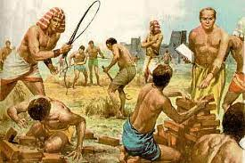
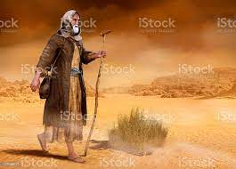
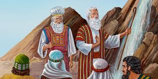

Quando o povo de Israel foi escravizado no Egito, clamou a Deus por libertação. Então Deus respondeu ao clamor deles, usando a expressão “Eu sou quem sou” (Êx 3:14) para se apresentar como seu libertador.
Diga isso ao povo de Israel: “Eu sou (ehyeh) me enviou a você”. . . . Diga isto ao povo de Israel: “O Senhor (Yahweh) , o Deus de seus pais, o Deus de Abraão, o Deus de Isaque e o Deus de Jacó, me enviou a vocês”. Este é o meu nome para sempre, e assim serei lembrado por todas as gerações.(Êxodo 3:14-15)Por anos o povo de israel vinham sofrido nas mãos do Egito sendo escravizados e explorados, cansados dessa vida, o povo decidiu clamar a Deus para que os libertassem e assim Deus atende seu clamor;
 E disse o Senhor: Tenho visto atentamente a aflição do meu povo, que está no Egito, e tenho ouvido o seu clamor por causa dos seus exatores, porque conheci as suas dores. Portanto desci para livrá-lo da mão dos egípcios, e para fazê-lo subir daquela terra, a uma terra boa e larga, a uma terra que mana leite e mel; ao lugar do cananeu, e do heteu, e do amorreu, e do perizeu, e do heveu, e do jebuseu. E agora, eis que o clamor dos filhos de Israel é vindo a mim, e também tenho visto a opressão com que os egípcios os oprimem. (êxodo 3: 7-9)Moisés, o homem separado por Deus desdo seu nascimento, foi encarregado ir a tomar a frente e ser representante de Deus na terra para aquele povo;
Vem agora, pois, e eu te enviarei a Faraó para que tires o meu povo (os filhos de Israel) do Egito. Êxodo 3:10  E tomando a frente moisés desseu e foi ao encontro das autoridades de israel e eles o atenderão, disse o senhor a ele... Deus tem uma missão dada a cada um de nós, moisés teve a chance de ver a sarça queimar e não se consumir, o mesmo Deus que se apresentou a ele também se apresenta para nós, a forma como ele se apresenta pode ser tanto quanto diferente como a de moisés, mas mesmo assim ele ainda se faz presente, a cada um nos foi dado uma missão, um chamado dado por Jesus;
E disse-lhes: — Vão por todo o mundo e preguem o evangelho a toda criatura. - Marcos 16:15,nossa missão ainda continua sendo libertar o povo, mas também libertar a nos mesmos, pois todos estamos sujeitos a cair na escravidão do pecado, por isso devemos procurar nos revestir da armadura de Deus todos os dias de nossa vida, pois como aquele povo sofria nas mãos de um inimigo visível temos a cada dia que nos fortalecer em cristo, pois nosso inimigo real é na verdade, intangível e invisível, aquele povo sabia quem era seu inimigo opressor, também sabemos quem é o nosso inimigo real. precisamos a cada dia estarmos fortalecidos em Deus pois a escravidão do espirito e pior que a escravidão da carne .